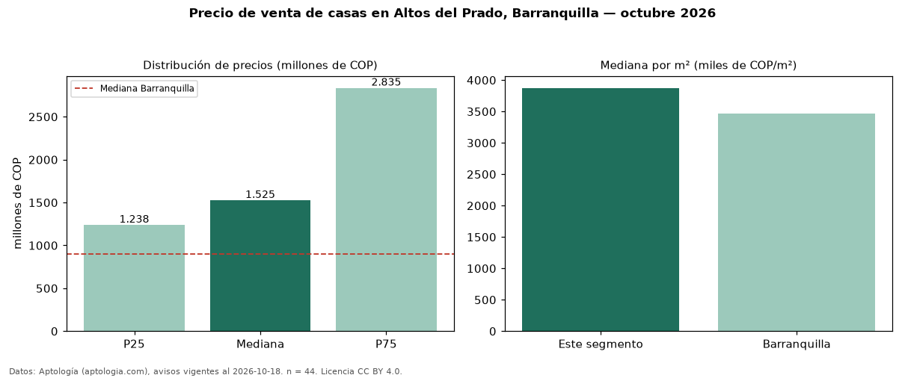

Precio de venta de casas en Altos del Prado, Barranquilla — octubre 2026
Con 44 avisos vigentes, el precio mediano de casas en venta en Altos del Prado, Barranquilla es COP 1,52 mil millones. Eso es 69 % por encima de la mediana de Barranquilla para casas (COP 900 millones). Por metro cuadrado, la mediana es COP 3,87 millones/m² (n = 40 avisos con área), 12 % por encima de Barranquilla (COP 3,46 millones/m²). Por precio mediano es el puesto 5 de 33 barrios de Barranquilla con al menos 30 avisos de casas en venta (COP): entre las más caras. El área mediana anunciada es 400 m². El segmento con más oferta es el de 3 o más habitaciones (40 avisos, mediana COP 1,52 mil millones). La mitad central de los avisos va de COP 1,24 mil millones a COP 2,83 mil millones (razón 2,3), una dispersión alta. El estrato más frecuente es 6 (55 % de los avisos con estrato). Datos: Aptología (aptologia.com), CC BY 4.0 — https://www.aptologia.com/casas-en-venta/barranquilla/altos-del-prado. Archivos: PDF, CSV con las cifras y gráfica PNG.

| Avisos únicos | 44 |
|---|---|
| Percentil 25 | COP 1.237.500.000 |
| Mediana | COP 1.525.000.000 |
| Percentil 75 | COP 2.835.000.000 |
| Mediana por m² | COP 3.873.431 |
Fuente: avisos vigentes de portales inmobiliarios recopilados por Aptología, deduplicados (mínimo 30 avisos únicos por celda). Precios pedidos, no cerrados. Fecha: 2026-10-18.